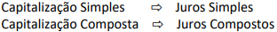
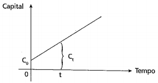
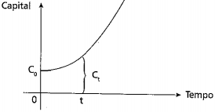

É o valor inicial de um empréstimo ou aplicação, sobre o qual irão incidir os juros. Símbolos:C, P ou PV (Present Value)
É o tempo de duração do empréstimo ou do investimento. Pode ser medido em dias, meses, trimestres, semestres, anos, etc. Símbolo: n
É o preço (em Reais) pago pelo aluguel, ou empréstimo, do dinheiro (do capital). É também o rendimento do dinheiro aplicado.Símbolo: J
É a taxa percentual ou unitária do rendimento do capital ou pagamento pelo uso do capital, numa unidade de tempo (ao dia, ao mês, ao ano,...) Símbolo: i
Taxa percentual de juros: 5 %
Taxa unitária de juros: 0,05
É o valor total a ser pago ou recebido com a finalidade de quitar um empréstimo. É o valor final de uma aplicação. Símbolo: M, S ou FV (Future Value)
Fórmula:
M = P + J
Ato de adicionar juros ao capital.
É uma função com crescimento linear
É uma função com crescimento exponencial
No regime de capitalização simples, a taxa de juros incide sempre sobre o capital inicial, durante o período de capitalização.
Exemplo 1: Um capital de R$ 5.000,00 é aplicado a juros simples durante 4 anos à taxa de 20% ao ano. Vamos calcular os juros gerados em cada período e o montante após o período total de aplicação.